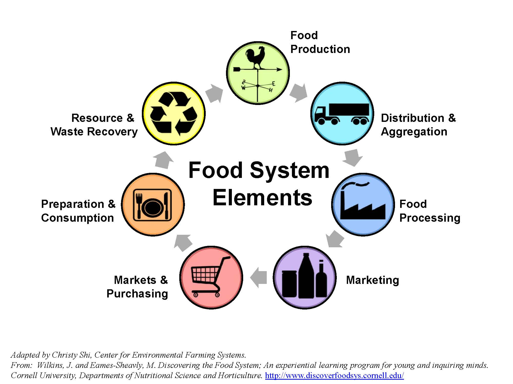

Prediction of Earth's climate
Due to the industrialization of global society beginning in the 1700s, and consequently the increased burning of fossil fuels, the U.S. Energy Information Administration was able to track the increasing trend in carbon dioxide emissions. The graph below shows that the rise in CO2 emissions became much steeper in the late 1800s, which also coincides with the gradual rise in the planet's overall CO2 concentration represented by the brown line.
Nasa identified an approximate rise of 1.1°C from 1850 - 2022. If the trend continues, it is predicted that the global temperature can rise by up to 3°C more by year 2100.
Contribution of contemporary food and agricultural systems
According to the National Library of Medicine, food systems within the food and agricultural sector were responsible for 21 - 37% of all global greenhouse emissions . For this reason, the report states that "transitioning to plant-based diets has the potential to reduce diet-related land use by 76%, diet-related greenhouse gas emissions by 49%, eutrophication by 49%, and green and blue water use by 21% and 14%, respectively, whilst garnering substantial health co-benefits".
